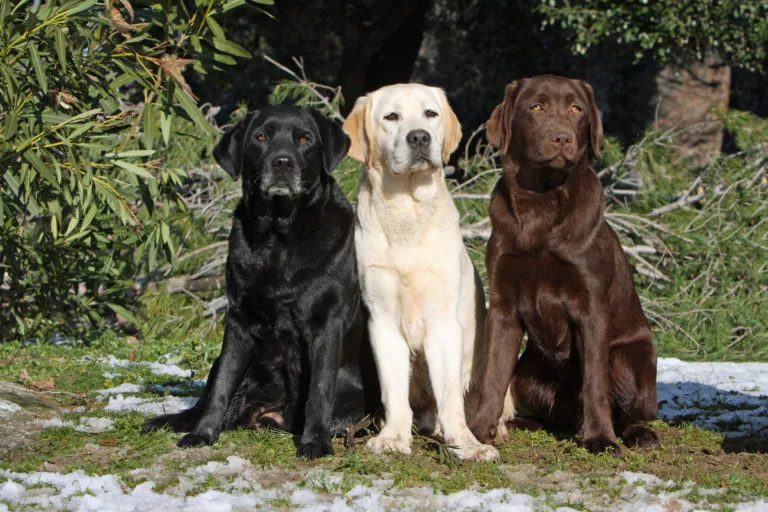

Galerija

Crna, žuta i smeđa tipične su boje dlake labrador retrivera.
 Zlatni retriver još je uvijek jedna od najpopularnijih pasmina obiteljskih pasa.
Zlatni retriver još je uvijek jedna od najpopularnijih pasmina obiteljskih pasa.
 Labrador - Miroljubivi ljubimci koji su vrlo inteligentni
Labrador - Miroljubivi ljubimci koji su vrlo inteligentni
 Njemački ovčar pasmina je domaćih pasa selektirana i odgajana za čuvanje stoke prvenstveno ovaca.
Njemački ovčar pasmina je domaćih pasa selektirana i odgajana za čuvanje stoke prvenstveno ovaca.
 Crni njemački ovčar od običnog se njemačkog ovčara razlikuje isključivo po boji dlake, dok su njihove osobine i poseban karakter gotovo isti.
Crni njemački ovčar od običnog se njemačkog ovčara razlikuje isključivo po boji dlake, dok su njihove osobine i poseban karakter gotovo isti.
 Aljaški malamut najveći je i najmoćniji pas za vuču saonica. Kompaktne je tjelesne građe sa širokim prsima i snažnim ramenima koja mu omogućuju vuču teških tereta.
Aljaški malamut najveći je i najmoćniji pas za vuču saonica. Kompaktne je tjelesne građe sa širokim prsima i snažnim ramenima koja mu omogućuju vuču teških tereta.
 Inteligentni i sofisticirani graničarski škotski ovčar, svima poznat kao Border Collie, sa srednje dugim ili kratkim krznom pravi je ovčar zato nije najbolji izbor za baš svaku obitelj.
Inteligentni i sofisticirani graničarski škotski ovčar, svima poznat kao Border Collie, sa srednje dugim ili kratkim krznom pravi je ovčar zato nije najbolji izbor za baš svaku obitelj.
 Ponosna i svojeglava akita inu, velikog, moćnog rasta ima status spomenika prirode u svojoj zemlji Japanu. Izvorno uzgajan kao lovački pas, danas je se uglavnom može naći kao punopravnog člana obitelji.
Ponosna i svojeglava akita inu, velikog, moćnog rasta ima status spomenika prirode u svojoj zemlji Japanu. Izvorno uzgajan kao lovački pas, danas je se uglavnom može naći kao punopravnog člana obitelji.
 Bigl ima kratke noge koje vas mogu zavarati – ova pasmina srednje veličine držat će vas aktivnim i uvijek je puna iznenađenja!
Bigl ima kratke noge koje vas mogu zavarati – ova pasmina srednje veličine držat će vas aktivnim i uvijek je puna iznenađenja!
 Aljaški haski, za razliku od svojih čistokrvnih rođaka, dugo nije bio cijenjen među ljubiteljima pasa. No imidž ovog mješanca se pomalo mijenja i to s dobrim razlogom.
Aljaški haski, za razliku od svojih čistokrvnih rođaka, dugo nije bio cijenjen među ljubiteljima pasa. No imidž ovog mješanca se pomalo mijenja i to s dobrim razlogom.
 Alopekis je izuzetno šarmantan pas koji se pojavljuje u mnogim varijacijama krzna. Međutim, izvan rodne Grčke nije baš poznat.
Alopekis je izuzetno šarmantan pas koji se pojavljuje u mnogim varijacijama krzna. Međutim, izvan rodne Grčke nije baš poznat.
 Suprotno onome što bi ime moglo sugerirati, australski ovčar je pastirski pas iz Sjedinjenih Država. Tamo se uzgaja od 19. stoljeća i vrlo je popularan zbog svoje inteligencije i sposobnosti učenja.
Suprotno onome što bi ime moglo sugerirati, australski ovčar je pastirski pas iz Sjedinjenih Država. Tamo se uzgaja od 19. stoljeća i vrlo je popularan zbog svoje inteligencije i sposobnosti učenja.
{kind=link}